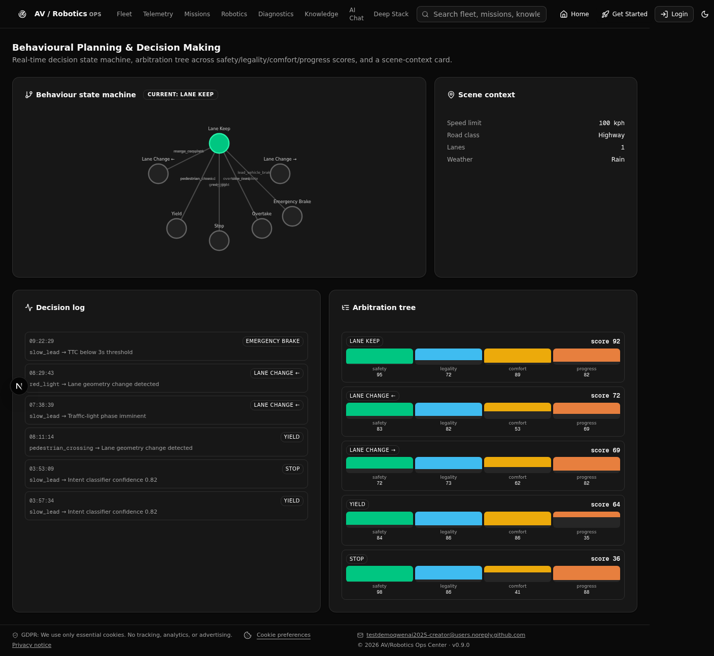

Behavioural Planning & Decision Making
Real-time decision state machine, arbitration tree across safety/legality/comfort/progress scores, and a scene-context card.
🌿 Behaviour state machine (current: lane_keep)
Behaviour state machine nodes:
lane_keep ← current
lane_change_left
lane_change_right
yield
stop
overtake
emergency_brake
📋 Decision log
08:42:15 lane_change_left ← merge_required
08:41:02 yield ← pedestrian_crossing
08:39:48 lane_keep ← merge_complete
08:38:11 stop ← red_light
08:36:55 overtake ← slow_lead
08:35:32 lane_keep ← overtake_complete
🌳 Arbitration tree
lane_keep — score 87 (safety 92, legality 95, comfort 88, progress 73)
overtake — score 71 (safety 65, legality 80, comfort 70, progress 89)
lane_change_left — score 64 (safety 58, legality 70, comfort 60, progress 78)
yield — score 52 (safety 95, legality 90, comfort 50, progress 25)
📍 Scene context
Speed limit: 50 kph ·
Road: urban ·
Lanes: 2 ·
Weather: clear
📸 Module screenshot
